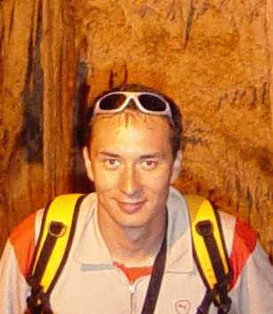
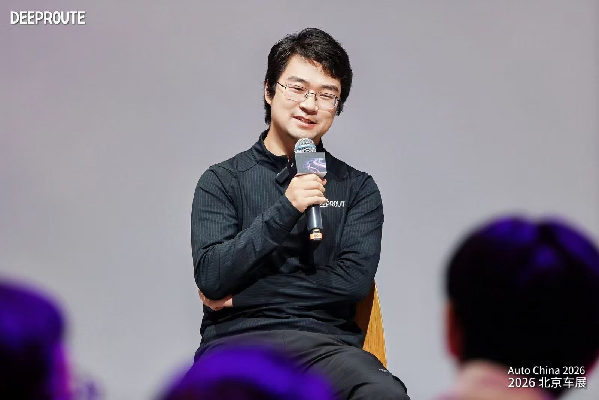
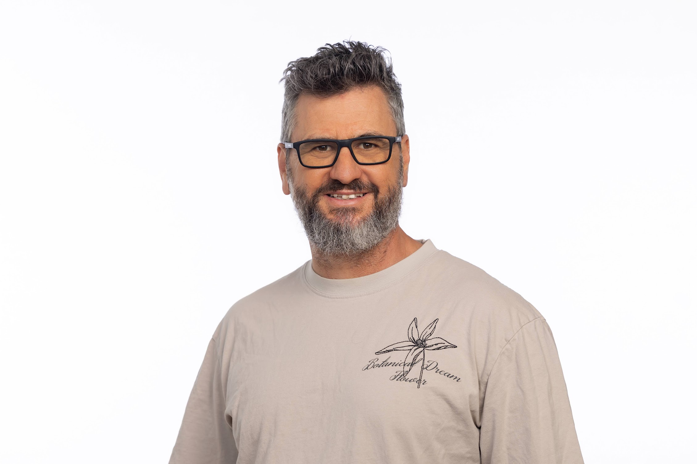
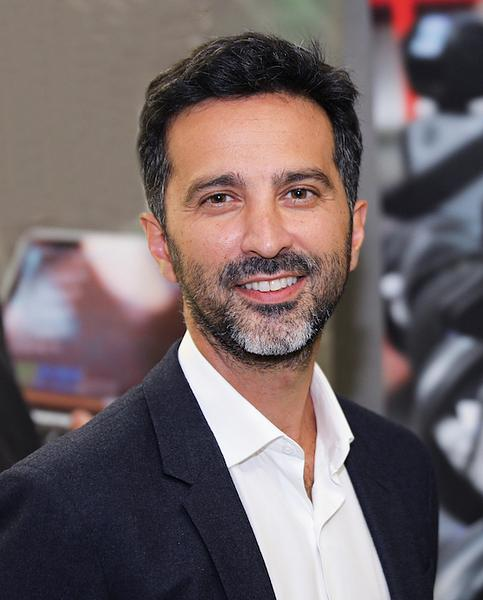
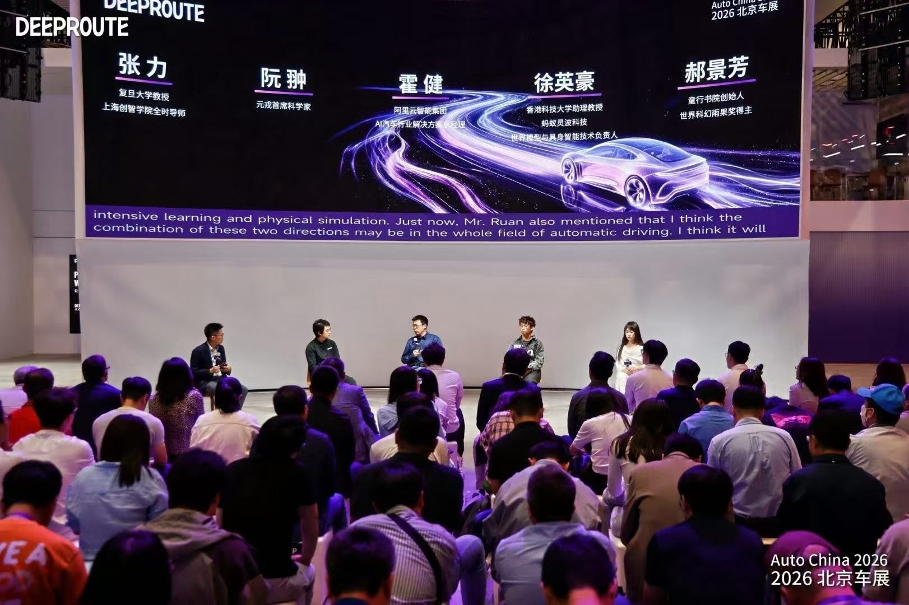

Morning
- 09:00–09:15 Welcome Speech
- 09:15–09:45 Keynote Talk 1 Chong Ruan
- 09:45–10:15 Keynote Talk 2 Dan Levi
- 10:15–10:30 Coffee break
- 10:30–11:00 Oral Session (2 × 15 min)
- 11:00–12:15 Poster Session
- 12:15–14:00 Lunch Break
September 9, 2026 · Full-day workshop
Building autonomous systems that proactively avoid latent hazards, reason under uncertainty, and deliver trustworthy defensive behavior.
SDAD (Safe and Defensive Autonomous Driving) is an ECCV 2026 full-day workshop in Malmö on September 9, 2026. We organize around three core problems:
September 9, 2026 · Full-day workshop, 09:00–17:45. 6 keynote talks, oral sessions with 4 papers, poster sessions, a panel discussion, and the best paper awards.







